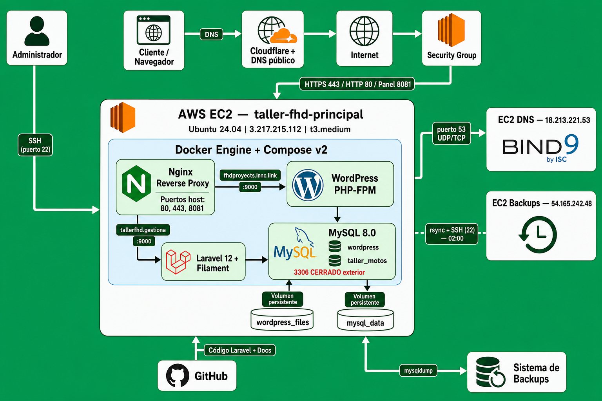
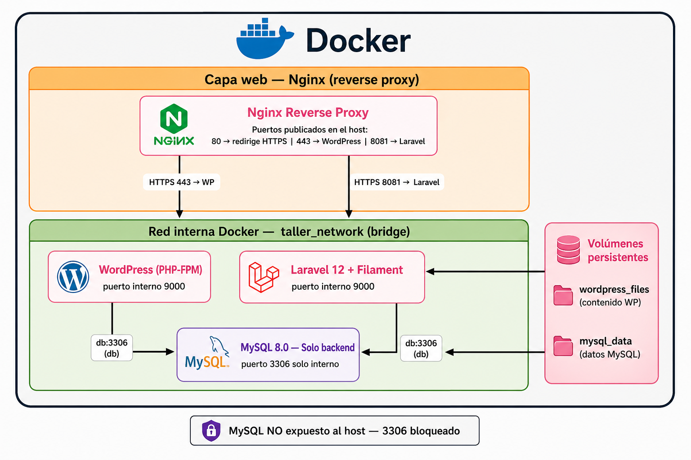
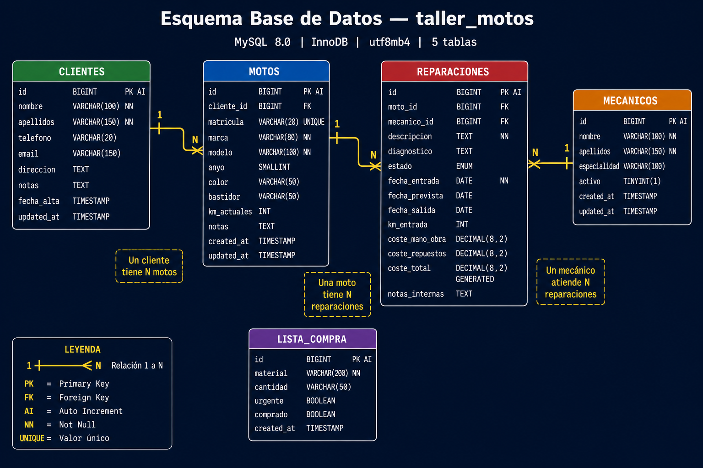

Marco Tecnológico
1. Diseño Conceptual
El diseño conceptual describe la infraestructura y organización de servicios del proyecto, mostrando cómo se interconectan los distintos elementos del sistema, cómo se gestiona la persistencia de datos y cómo se asegura la comunicación segura y el aislamiento entre servicios.
1.1 Visión general de la infraestructura
El sistema se implementa sobre tres instancias AWS EC2 con Ubuntu Server 24.04, cada una con un rol específico e independiente. Sobre el servidor principal corre Docker Compose v2, que orquesta cuatro contenedores interconectados a través de una red interna privada.
| Instancia | IP Elástica | Tipo | Rol |
|---|---|---|---|
| taller-fhd-principal | 3.217.215.112 | t3.medium | Servidor web, panel admin y base de datos |
| taller-fhd-dns | 18.213.221.53 | t3.micro | Servidor DNS con BIND9 |
| taller-fhd-backups | 54.165.242.48 | t3.micro | Servidor de copias de seguridad |

Figura 1. Mapa conceptual que representa la infraestructura tecnológica del sistema, mostrando la relación entre las tres instancias AWS EC2, los contenedores Docker y las redes internas.
1.2 Host y firewall perimetral
- AWS EC2 (Ubuntu Server 24.04)
- Tres instancias cloud independientes, cada una con su Elastic IP fija.
-
Gestión de usuarios, permisos del sistema de archivos y servicios.
-
Security Groups de AWS
- Sustituyen al firewall tradicional del host en entornos cloud.
- Controlan y filtran el tráfico entrante y saliente a nivel de instancia.
- Cada instancia tiene su propio Security Group adaptado a su función.
Servidor principal:
| Puerto | Protocolo | Origen | Uso |
|---|---|---|---|
| 22 | TCP | IP propia | Acceso SSH administrador |
| 80 | TCP | 0.0.0.0/0 | Redirección HTTP → HTTPS |
| 443 | TCP | 0.0.0.0/0 | Web pública WordPress (HTTPS) |
| 8081 | TCP | 0.0.0.0/0 | Panel admin Laravel (HTTPS) |
| 3306 | — | CERRADO | MySQL nunca expuesto |
Servidor DNS:
| Puerto | Protocolo | Origen | Uso |
|---|---|---|---|
| 22 | TCP | IP propia | Acceso SSH |
| 53 | UDP | 0.0.0.0/0 | Consultas DNS |
| 53 | TCP | 0.0.0.0/0 | Consultas DNS |
Servidor de backups:
| Puerto | Protocolo | Origen | Uso |
|---|---|---|---|
| 22 | TCP | IP propia | Acceso SSH administrador |
| 22 | TCP | 3.217.215.112/32 | Recepción de backups por rsync |
1.3 Plataforma Docker y diseño de contenedores
- Docker Engine + Docker Compose v2
- Motor de contenedores que ejecuta los servicios de forma aislada.
- Gestiona la creación de contenedores, redes internas y volúmenes persistentes.
- Garantiza portabilidad, escalabilidad y facilidad de mantenimiento.
-
Se usa Compose v2 como plugin nativo (comando
docker compose, sin guión). -
Red interna Docker (
taller_network) - Red privada de tipo
bridgeque conecta todos los contenedores. - Los contenedores se comunican entre sí por nombre (ej:
db:3306). -
La base de datos MySQL nunca es accesible desde el exterior.
-
Volúmenes Docker
- Permiten la persistencia de datos frente a reinicios o recreaciones de contenedores.
- Facilitan la realización de copias de seguridad completas del entorno.

Figura 2. Diagrama de los cuatro contenedores, sus relaciones y los volúmenes persistentes asociados.
1.4 Servicios en contenedores
Cuatro contenedores en el servidor principal, conectados por la red interna taller_network. Nginx es el único punto de entrada desde el exterior; MySQL nunca expone el puerto 3306.
| Contenedor | Imagen | Rol principal |
|---|---|---|
| Nginx | nginx:alpine |
Reverse proxy, HTTPS y enrutamiento por dominio |
| WordPress | wordpress:fpm-alpine |
CMS de la web pública (fhdproyects.innc.link) |
| Laravel + Filament | php:8.2-fpm-alpine (custom) |
Panel de gestión privado (tallerfhd.gestiona) |
| MySQL | mysql:8.0 |
Dos BDs separadas con usuarios de privilegios mínimos |
Enrutamiento por dominio:
fhdproyects.innc.link→ WordPress (acceso público)tallerfhd.gestiona→ Laravel/Filament (solo DNS privado)
La configuración concreta (
docker-compose.yml, Nginx, SQL de inicialización, Dockerfile) se documenta en el capítulo Desarrollo.
1.5 Servidor DNS — BIND9
El servidor DNS proporciona resolución de nombres independiente de Cloudflare, permitiendo el acceso a los dominios del taller incluso en entornos donde el DNS público esté bloqueado (como el WiFi del centro educativo).
- Software: BIND9 en instancia EC2 independiente (
18.213.221.53) - Zonas configuradas:
fhdproyects.innc.link→3.217.215.112(mismo registro que Cloudflare)tallerfhd.gestiona→3.217.215.112(dominio privado, solo existe en este DNS)
Funcionamiento según el escenario:
| Escenario | DNS utilizado | Resultado |
|---|---|---|
| WiFi del centro (Cloudflare bloqueado) | DNS privado (18.213.221.53) | ✅ Resuelve correctamente |
| Móvil del profesor con datos móviles | Cloudflare (DNS público) | ✅ Resuelve correctamente |
| Cualquier equipo sin DNS privado | Cloudflare | ✅ WordPress accesible, Laravel no |
El dominio
tallerfhd.gestionaes un dominio inventado que solo existe en el DNS privado. Esto garantiza que el panel de administración de Laravel sea inaccesible desde internet y solo accesible desde equipos configurados explícitamente.
1.6 Sistema de copias de seguridad
Diseño del sistema de backups: copias automáticas nocturnas (2:00 AM) desde el servidor principal hacia una instancia EC2 independiente, mediante mysqldump, tar y rsync sobre SSH.
| Elemento | Método | Destino |
|---|---|---|
Base de datos wordpress |
mysqldump |
/opt/backups/ en servidor backups |
Base de datos taller_motos |
mysqldump |
/opt/backups/ en servidor backups |
| Archivos WordPress | tar + rsync |
/opt/backups/ en servidor backups |
Configuración /opt/taller |
tar + rsync |
/opt/backups/ en servidor backups |
El script
backup.sh, la clave SSH y la entrada decronse documentan en el capítulo Desarrollo (§9).
1.7 Modelo de datos
La base de datos taller_motos contiene cinco tablas interrelacionadas (clientes, motos, reparaciones, mecánicos y lista de compra):

Figura 3. Esquema relacional de la base de datos taller_motos, con sus tablas, campos y relaciones entre entidades.
1.8 Flujo de datos
- El usuario introduce el dominio en el navegador.
- El equipo consulta su servidor DNS configurado:
- Si apunta al DNS privado → resuelve
tallerfhd.gestionaofhdproyects.innc.link - Si apunta a Cloudflare → resuelve solo
fhdproyects.innc.link - La solicitud llega al contenedor Nginx en la IP
3.217.215.112. - Nginx redirige HTTP → HTTPS (redirección 301).
- Nginx enruta según el dominio:
fhdproyects.innc.link→ reenvía al contenedor WordPress (PHP-FPM, puerto interno 9000).tallerfhd.gestiona→ reenvía al contenedor Laravel (PHP-FPM, puerto interno 9000).- WordPress consulta o actualiza la base de datos
wordpressa través de la red interna Docker. - Laravel consulta o actualiza la base de datos
taller_motosmediante Eloquent ORM. - Los volúmenes Docker aseguran que toda la información crítica se almacene de forma persistente.
- Cada noche a las 2:00 AM, el script de backup envía copias de seguridad al servidor independiente.
1.9 Seguridad y aislamiento
- Security Groups de AWS
- Cada instancia tiene su Security Group específico con solo los puertos necesarios.
-
MySQL (3306) está completamente bloqueado a nivel de red en las tres instancias.
-
HTTPS con Cloudflare Origin Certificates
- Todo el tráfico web va cifrado con TLS 1.2/1.3.
- Redirección automática de HTTP a HTTPS en Nginx.
-
Certificado válido para
*.innc.link. -
DNS privado para el panel de administración
tallerfhd.gestionasolo existe en el DNS privado.-
El panel de Laravel es inaccesible desde internet para quien no tenga el DNS configurado.
-
Red interna Docker (
taller_network) - Aísla el tráfico entre contenedores y evita accesos no autorizados.
-
MySQL solo es accesible desde WordPress y Laravel, nunca desde el exterior.
-
Credenciales en
.env - Todas las contraseñas y claves se almacenan en un archivo
.envque nunca se sube al repositorio Git. -
Docker Compose las inyecta como variables de entorno en tiempo de ejecución.
-
Usuarios MySQL con privilegios mínimos
wp_usersolo puede acceder a la base de datoswordpress.laravel_usersolo puede acceder a la base de datostaller_motos.-
Ninguna aplicación usa el usuario
root. -
Eloquent ORM en Laravel
-
Todas las consultas pasan por el ORM, eliminando por diseño los ataques de SQL Injection.
-
Copias de seguridad automáticas
- Backups nocturnos en servidor independiente.
- Recuperación ante fallos físicos o lógicos garantizada.
1.10 Justificación del diseño
- Tres instancias separadas garantizan que un fallo en un servidor no afecte al resto.
- Separación de servicios en contenedores para aislamiento, seguridad y facilidad de mantenimiento.
- Nginx como reverse proxy unifica el punto de entrada y enruta por dominio en vez de por puerto.
- Dos aplicaciones separadas (WordPress para la web pública, Laravel para la gestión interna) evita que una brecha en el CMS exponga los datos del negocio.
- Dos bases de datos separadas garantiza que cada aplicación solo accede a sus propios datos.
- DNS privado permite demostrar resolución de nombres propia e independencia de proveedores externos.
- Volúmenes persistentes + backups automáticos aseguran la recuperación de datos ante cualquier fallo.
- AWS EC2 + Security Groups proporciona una solución cloud robusta y escalable, alineada con entornos de producción reales.
1.11 Matriz de vulnerabilidades
La siguiente matriz recoge las principales vulnerabilidades asociadas a la infraestructura implementada, su impacto, probabilidad estimada y las medidas de mitigación aplicadas.
| Activo / Componente | Vulnerabilidad / Amenaza | Impacto | Probabilidad | Nivel de riesgo | Medidas de mitigación |
|---|---|---|---|---|---|
| AWS EC2 (Ubuntu Server) | Sistema desactualizado | Alto | Media | Alto | apt update && apt upgrade periódico, repositorios oficiales. |
| Security Groups AWS | Puertos innecesarios abiertos | Alto | Media | Alto | Solo puertos mínimos abiertos por instancia. Puerto 3306 bloqueado. |
| Acceso SSH al host | Credenciales débiles o fuga de clave | Alto | Media | Alto | Autenticación por clave privada .pem, sin contraseña SSH. |
| Docker Engine | Exposición accidental de contenedores | Alto | Baja | Medio | Solo Nginx tiene puertos publicados. MySQL sin puertos expuestos. |
| Contenedor WordPress | Vulnerabilidades en plugins desactualizados | Alto | Media | Alto | Actualización periódica de WordPress y plugins, copias de seguridad. |
| Contenedor WordPress | Ataques de fuerza bruta sobre /wp-admin |
Medio | Media | Medio | Contraseñas fuertes, plugins de seguridad, limitación de intentos. |
| Contenedor Laravel | Acceso no autorizado al panel /admin |
Alto | Baja | Bajo | Login propio con bcrypt, sesiones cifradas con APP_KEY y acceso restringido por DNS privado. |
| Contenedor MySQL | Acceso no autorizado a la base de datos | Alto | Baja | Medio | Red interna Docker, usuarios con privilegios mínimos, sin puerto expuesto. |
| Contenedor MySQL | Pérdida o corrupción de datos | Alto | Baja | Bajo | Volúmenes Docker persistentes + backups automáticos nocturnos en servidor independiente. |
Archivo .env |
Exposición de credenciales | Alto | Baja | Medio | Nunca en Git (.gitignore), permisos restrictivos en el servidor. |
| Comunicaciones web | Tráfico interceptado | Alto | Baja | Bajo | HTTPS activo con certificados Cloudflare Origin, TLS 1.2/1.3. |
| Servidor DNS | Caída del DNS privado | Medio | Baja | Bajo | Cloudflare como DNS público de respaldo para el dominio principal. |
| Servidor de backups | Pérdida de copias de seguridad | Alto | Baja | Medio | Instancia independiente con Elastic IP. Logs de cada ejecución. |
| Red interna Docker | Configuración incorrecta de red | Alto | Baja | Medio | Verificación de que servicios críticos solo son accesibles por taller_network. |